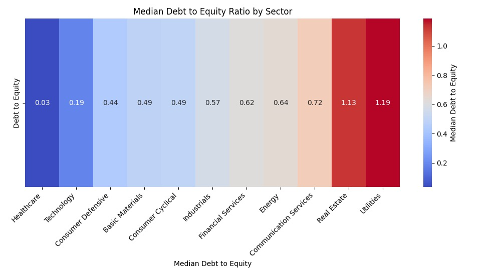

by Aanay Anandpara & Samy Alfandry
This project provides an in-depth analysis of financial indicators across different sectors and how they correlate with stock performance. By utilizing advanced data visualization techniques, we uncover hidden patterns and insights that inform strategic investment decisions.
Source: The dataset is hosted on Kaggle and consists of financial data for US stocks over five years, from 2014 to 2018.
Size and Content: The particular file we are focusing on is '2018_Financial_Data.csv'. The dataset includes a wide range of financial indicators, totaling over 200 different metrics. These metrics encompass various aspects of a company's financial health and performance, such as revenue growth, profit margins, operational efficiency, debt levels, and cash flow metrics. The dataset is comprehensive, covering a significant number of US-listed companies across various sectors. This allows for a detailed analysis of sector-specific trends and comparisons.
We will only be using these columns to analyze if there is a correlation between sector-wise financial indicators and stock performance:
This bar chart visualizes the median revenue growth across different sectors, offering insights into industry-specific performance. The visualization highlights sectors with the highest and lowest median growth, indicating potential trends and sectors of interest for stakeholders.
Description: The D3 bar chart represents median revenue growth by sector, rendered interactively in the browser.
Description: The chart displays the median Debt to Equity ratio for various industry sectors, visually represented through a heatmap and highlighting differences in financial leverage with a color gradient that enhances comparability and insight into sector-specific risk profiles.
Description: The bar chart demonstrates the operating income by sector, with each bar's height representing the total operating income for that sector. It provides a clear comparison of financial performance across various industries.
Description: The bar chart illustrates the median Debt to Equity ratio for a range of industry sectors, employing a color-coded system for ease of differentiation. The tooltip feature provides exact median values upon interaction, offering detailed financial structure insights per sector.
Description: This interactive scatter plot contrasts R&D Expense Growth with 2019 Price Variation (%) across various sectors, each denoted by a unique color. Detailed financial metrics are accessible through tooltips upon hovering over each data point, and the plot offers a zoom function to closely examine specific areas of interest.
In this project, we have investigated the connection between sector-specific financial indicators and stock performance, revealing notable patterns and correlations through data visualization. Our findings indicate particular metrics, such as R&D investment and debt levels, have varying impacts on stock valuations across different industries. These insights lay the groundwork for future research, where advanced statistical methods and predictive modeling can be applied to enhance investment strategies and inform economic policy decisions. Moving forward, we aim to integrate more complex algorithms and expansive datasets to refine our understanding of the financial market's multifaceted nature. Our visualizations can also be updated with new stock data and investors can use it to be more informative when making investment decisions.